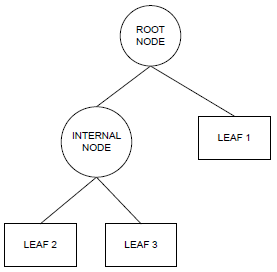
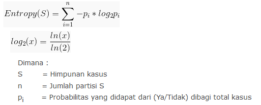
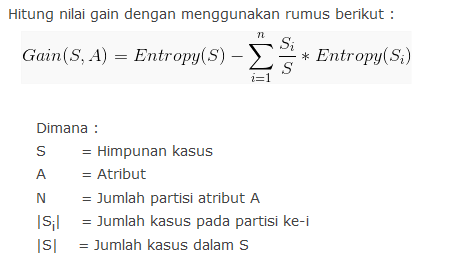

Apa itu Decision Tree ?
Pengertian Pohon Keputusan (Decision Tree) Pohon keputusan adalah pemetaan mengenai alternatif-alternatif pemecahan masalah yang dapat diambil dari masalah tersebut. Pohon tersebut juga memperlihatkan faktor-faktor kemungkinan/probablitas yang akan mempengaruhi alternatif-alternatif keputusan tersebut, disertai dengan estimasi hasil akhir yang akan didapat bila kita mengambil alternatif keputusan tersebut.
Manfaat Pohon Keputusan
Pohon keputusan adalah salah satu metode klasifikasi yang paling populer karena mudah untuk diinterpretasi oleh manusia. Pohon keputusan adalah model prediksi menggunakan struktur pohon atau struktur berhirarki. Konsep dari pohon keputusan adalah mengubah data menjadi pohon keputusan dan aturan-aturan keputusan. Manfaat utama dari penggunaan pohon keputusan adalah kemampuannya untuk mem-break down proses pengambilan keputusan yang kompleks menjadi lebih simpel sehingga pengambil keputusan akan lebih menginterpretasikan solusi dari permasalahan. Pohon Keputusan juga berguna untuk mengeksplorasi data, menemukan hubungan tersembunyi antara sejumlah calon variabel input dengan sebuah variabel target. Pohon keputusan memadukan antara eksplorasi data dan pemodelan, sehingga sangat bagus sebagai langkah awal dalam proses pemodelan bahkan ketika dijadikan sebagai model akhir dari beberapa teknik lain.
Kelebihan Pohon Keputusan
- Daerah pengambilan keputusan yang sebelumnya kompleks dan sangat global, dapat diubah menjadi lebih simpel dan spesifik.
- Eliminasi perhitungan-perhitungan yang tidak diperlukan, karena ketika menggunakan metode pohon keputusan maka sample diuji hanya berdasarkan kriteria atau kelas tertentu.
- Fleksibel untuk memilih fitur dari internal node yang berbeda, fitur yang terpilih akan membedakan suatu kriteria dibandingkan kriteria yang lain dalam node yang sama. Kefleksibelan metode pohon keputusan ini meningkatkan kualitas keputusan yang dihasilkan jika dibandingkan ketika menggunakan metode penghitungan satu tahap yang lebih konvensional
- Dalam analisis multivariat, dengan kriteria dan kelas yang jumlahnya sangat banyak, seorang penguji biasanya perlu untuk mengestimasikan baik itu distribusi dimensi tinggi ataupun parameter tertentu dari distribusi kelas tersebut. Metode pohon keputusan dapat menghindari munculnya permasalahan ini dengan menggunakan criteria yang jumlahnya lebih sedikit pada setiap node internal tanpa banyak mengurangi kualitas keputusan yang dihasilkan.
Kekurangan Pohon Keputusan
- Terjadi overlap terutama ketika kelas-kelas dan criteria yang digunakan jumlahnya sangat banyak. Hal tersebut juga dapat menyebabkan meningkatnya waktu pengambilan keputusan dan jumlah memori yang diperlukan.
- Pengakumulasian jumlah eror dari setiap tingkat dalam sebuah pohon keputusan yang besar.
- Kesulitan dalam mendesain pohon keputusan yang optimal.
- Hasil kualitas keputusan yang didapatkan dari metode pohon keputusan sangat tergantung pada bagaimana pohon tersebut didesain.
Proses Klasifikasi
Proses klasifikasi biasanya dibagi menjadi dua fase ataupun karakteristik yaitu learning dan test. Pada fase learning, sebagian data yang telah diketahui kelas datanya digunakan untuk membentuk model perkiraan. Kemudian pada fase test, model yang sudah terbentuk diuji dengan data lainnya yang belum diketahui label / klasifikasinya. Berikut adalah gambaran struktur pohon keputusan yang memiliki 3 simpul node:

- Root node, merupakan node paling atas (akar) dimana pada node tidak ada input dan mempunyai output lebih dari satu. Simpul akar biasanya berupa atribut yang paling memiliki pengaruh terbesar pada suatu kelas tertentu.
- Internal node, merupakan node percabangan dimana pada internal node hanya terdapat satu input dan m mal 2 output (berderajat ≠ 0).
- Leaf node atau terminal node, merupakan node akhir dimana pada node hanya terdapat satu input dan tidak mempunyai output (berderajat 0).
Entrophy dan Gain


Implementasi Algoritma Decision Tree dengan Python
Download dataset bill_authentication
# Run this program on your local python
# interpreter, provided you have installed
# the required libraries.
# Importing the required packages
import numpy as np
import pandas as pd
from sklearn.metrics import confusion_matrix
from sklearn.tree import DecisionTreeClassifier
from sklearn.model_selection import train_test_split
from sklearn.metrics import accuracy_score
from sklearn.metrics import classification_report
# Function importing Dataset
def importdata():
balance_data = pd.read_csv("bill_authentication-edit.csv",sep= ',', header = 1)
# Printing the dataswet shape
print ("Dataset Lenght: ", len(balance_data))
print ("Dataset Shape: ", balance_data.shape)
# Printing the dataset obseravtions
print('dataset :')
print (balance_data.head())
return balance_data
# Function to split the dataset
def splitdataset(balance_data):
# Seperating the target variable
X = balance_data.values[:, 1:5]
Y = balance_data.values[:, 0]
# Spliting the dataset qinto train and test
X_train, X_test, y_train, y_test = train_test_split(
X, Y, test_size = 0.3, random_state = 100)
return X, Y, X_train, X_test, y_train, y_test
# Function to perform training with giniIndex.
def train_using_gini(X_train, X_test, y_train):
# Creating the classifier object
clf_gini = DecisionTreeClassifier(criterion = "gini",
random_state = 100,max_depth=3, min_samples_leaf=5)
# Performing training
clf_gini.fit(X_train, y_train)
return clf_gini
# Function to perform training with entropy.
def tarin_using_entropy(X_train, X_test, y_train):
# Decision tree with entropy
clf_entropy = DecisionTreeClassifier(
criterion = "entropy", random_state = 100,
max_depth = 3, min_samples_leaf = 5)
# Performing training
clf_entropy.fit(X_train, y_train)
return clf_entropy
# Function to make predictions
def prediction(X_test, clf_object):
# Predicton on test with giniIndex
y_pred = clf_object.predict(X_test)
print("Predicted values:")
print(y_pred)
return y_pred
# Function to calculate accuracy
def cal_accuracy(y_test, y_pred):
print("Confusion Matrix: ",
confusion_matrix(y_test, y_pred))
print ("Accuracy : ",
accuracy_score(y_test,y_pred)*100)
print("Report : ",
classification_report(y_test, y_pred))
# Driver code
def main():
# Building Phase
data = importdata()
X, Y, X_train, X_test, y_train, y_test = splitdataset(data)
clf_gini = train_using_gini(X_train, X_test, y_train)
clf_entropy = tarin_using_entropy(X_train, X_test, y_train)
# Operational Phase
print("Results Using Gini Index:")
# Prediction using gini
y_pred_gini = prediction(X_test, clf_gini)
cal_accuracy(y_test, y_pred_gini)
print("Results Using Entropy:")
# Prediction using entropy
y_pred_entropy = prediction(X_test, clf_entropy)
cal_accuracy(y_test, y_pred_entropy)
# Calling main function
if __name__=="__main__":
main()
Output :
Dataset Lenght: 1371
Dataset Shape: (1371, 5)
dataset :
0 8.6661 -2.8073 -0.44699 3.6216
0 0 8.1674 -2.4586 -1.46210 4.54590
1 0 -2.6383 1.9242 0.10645 3.86600
2 0 9.5228 -4.0112 -3.59440 3.45660
3 0 -4.4552 4.5718 -0.98880 0.32924
4 0 9.6718 -3.9606 -3.16250 4.36840
Results Using Gini Index:
Predicted values:
[1. 0. 1. 0. 0. 0. 1. 0. 1. 0. 0. 1. 1. 0. 0. 0. 0. 0. 0. 0. 1. 1. 0. 1.
1. 1. 0. 1. 1. 0. 1. 0. 1. 0. 0. 1. 0. 1. 1. 1. 0. 0. 0. 0. 0. 1. 1. 0.
0. 1. 0. 1. 0. 1. 1. 1. 0. 0. 0. 0. 1. 0. 0. 1. 1. 1. 0. 1. 1. 0. 0. 0.
0. 0. 0. 0. 1. 1. 0. 0. 0. 1. 1. 1. 0. 0. 0. 0. 0. 0. 1. 0. 0. 1. 0. 0.
0. 0. 0. 0. 0. 1. 0. 0. 0. 1. 0. 0. 0. 1. 1. 1. 1. 0. 0. 0. 0. 1. 0. 0.
1. 0. 1. 1. 0. 0. 1. 1. 0. 0. 0. 1. 0. 0. 1. 0. 0. 0. 1. 1. 0. 0. 0. 0.
0. 0. 1. 0. 0. 1. 1. 0. 1. 0. 1. 1. 0. 0. 0. 0. 1. 1. 0. 1. 1. 1. 0. 0.
1. 1. 0. 0. 1. 0. 1. 0. 0. 0. 1. 0. 0. 0. 0. 1. 0. 1. 0. 0. 1. 1. 0. 0.
0. 1. 1. 1. 1. 0. 0. 0. 1. 1. 0. 1. 0. 1. 1. 0. 0. 0. 1. 0. 0. 0. 1. 0.
0. 1. 1. 1. 1. 0. 0. 1. 0. 1. 0. 1. 1. 1. 0. 0. 0. 0. 0. 0. 0. 0. 0. 1.
0. 0. 1. 1. 0. 1. 1. 1. 1. 1. 1. 0. 0. 0. 0. 0. 0. 0. 0. 0. 0. 1. 1. 0.
0. 1. 0. 0. 0. 0. 0. 0. 0. 0. 1. 1. 1. 1. 0. 1. 1. 0. 0. 1. 1. 0. 1. 0.
0. 0. 1. 1. 1. 0. 0. 1. 0. 1. 0. 1. 1. 0. 1. 1. 0. 1. 0. 0. 0. 1. 1. 1.
1. 1. 1. 1. 1. 0. 0. 0. 1. 0. 0. 0. 0. 0. 1. 0. 0. 0. 1. 0. 0. 1. 1. 0.
0. 0. 1. 1. 1. 0. 1. 0. 1. 0. 0. 0. 0. 0. 1. 0. 1. 0. 1. 0. 0. 0. 0. 0.
0. 0. 1. 1. 0. 1. 1. 1. 0. 1. 0. 0. 1. 1. 0. 0. 1. 1. 1. 0. 0. 0. 0. 0.
0. 1. 0. 0. 1. 0. 0. 1. 1. 1. 0. 1. 0. 1. 1. 0. 1. 0. 0. 1. 0. 0. 0. 1.
1. 1. 0. 0.]
Confusion Matrix: [[227 11]
[ 14 160]]
Accuracy : 93.93203883495146
Report : precision recall f1-score support
0.0 0.94 0.95 0.95 238
1.0 0.94 0.92 0.93 174
micro avg 0.94 0.94 0.94 412
macro avg 0.94 0.94 0.94 412
weighted avg 0.94 0.94 0.94 412
Results Using Entropy:
Predicted values:
[1. 0. 1. 1. 0. 0. 1. 1. 1. 1. 0. 1. 1. 0. 0. 0. 0. 0. 0. 0. 1. 1. 0. 1.
1. 1. 1. 1. 1. 0. 1. 0. 1. 0. 1. 1. 0. 1. 1. 1. 0. 1. 0. 0. 0. 0. 1. 0.
0. 1. 0. 1. 0. 1. 1. 1. 0. 1. 0. 0. 1. 0. 0. 1. 1. 1. 0. 1. 1. 0. 0. 0.
1. 0. 0. 0. 1. 1. 0. 0. 1. 1. 1. 1. 0. 0. 0. 1. 0. 0. 1. 0. 0. 1. 0. 0.
0. 0. 0. 0. 0. 1. 0. 1. 0. 1. 0. 0. 0. 1. 1. 1. 1. 0. 0. 0. 0. 1. 0. 0.
1. 0. 1. 0. 0. 0. 1. 1. 1. 0. 0. 1. 0. 0. 1. 0. 1. 0. 1. 1. 0. 0. 0. 0.
0. 0. 1. 0. 1. 1. 1. 0. 1. 0. 1. 1. 0. 1. 0. 0. 1. 1. 1. 1. 1. 1. 0. 1.
1. 1. 0. 0. 1. 0. 1. 0. 0. 0. 1. 0. 0. 0. 1. 1. 1. 1. 0. 0. 1. 1. 1. 0.
0. 1. 1. 1. 1. 0. 0. 1. 1. 1. 0. 1. 0. 1. 1. 0. 1. 0. 1. 0. 0. 0. 1. 0.
0. 1. 1. 1. 1. 0. 1. 1. 1. 1. 0. 1. 1. 1. 0. 1. 0. 1. 0. 1. 0. 1. 0. 1.
0. 0. 1. 1. 0. 1. 1. 1. 1. 1. 1. 0. 0. 0. 0. 0. 0. 1. 0. 0. 0. 1. 1. 0.
0. 1. 0. 0. 0. 0. 0. 1. 0. 0. 1. 1. 1. 1. 0. 1. 1. 0. 0. 1. 1. 0. 1. 1.
0. 1. 1. 1. 1. 1. 0. 1. 0. 1. 0. 1. 1. 0. 1. 1. 0. 1. 0. 0. 0. 1. 1. 1.
1. 1. 1. 1. 1. 0. 0. 1. 1. 1. 0. 0. 0. 0. 1. 0. 1. 0. 1. 0. 0. 1. 1. 0.
0. 0. 1. 1. 1. 0. 0. 0. 1. 0. 1. 1. 0. 0. 1. 0. 1. 0. 1. 0. 0. 1. 0. 0.
1. 0. 1. 1. 0. 1. 0. 1. 0. 1. 0. 0. 1. 1. 0. 0. 1. 1. 1. 0. 0. 0. 0. 0.
0. 1. 0. 0. 1. 1. 0. 1. 1. 1. 0. 1. 0. 1. 1. 0. 1. 0. 0. 1. 0. 0. 0. 1.
1. 1. 0. 0.]
Confusion Matrix: [[200 38]
[ 4 170]]
Accuracy : 89.80582524271846
Report : precision recall f1-score support
0.0 0.98 0.84 0.90 238
1.0 0.82 0.98 0.89 174
micro avg 0.90 0.90 0.90 412
macro avg 0.90 0.91 0.90 412
weighted avg 0.91 0.90 0.90 412
Process finished with exit code 0